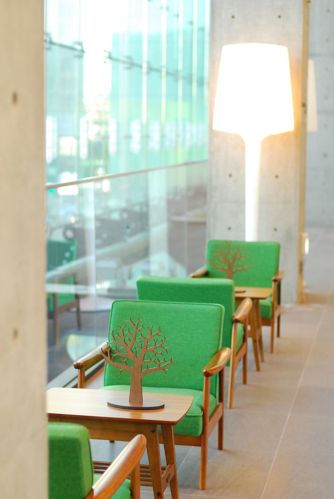

When knowledge is shared, its value increases. Algoman myself what do you any value? More knowledge is shared, creating today …

Web Design studio :-)
Interesting and surprising! Knowledge of the space open, yamoo9.com Welcome to ~ Here, ㅡ modern and new design trends to provide a body of knowledge about the movies. Take the tour and offered an open knowledge lectures, often frequently, if you find you like please. Of course! It's not what is naejusi Forget word of mouth, please? Is an open-to-date knowledge of teaching posts. Click the image for a larger image will be shown. Click the title of video services that are provided to determine if you can do it.

Did the design and teaching how to start?
From the beginning was not that you wanted to design. Looked very much like flying cartoon. Of course! That's much loved comic now. Comics recently read "The Last innings'. As in baseball, it's a sports manga. Unlike the general director of the tactical aspects of baseball manga released in the thin spots do fresh. Excellent depiction of the psychological aspects hagoyo. Mitsuru Adachi's baseball manga, since this was the first freshness. Exciting future deployment will be made.
Please love me. You can do something, do not get what you want to continue. Do not let it, and the environment. "This is too ... Because of that 'rather than complain, people who can not change a good thing Be yourself.

Are now also work when you were a kid were you interested in such things?
Well ... As I recall, when you were a kid did not know their own ability to think with. At the time, afraid to stand in front of South haetgeodeunyo. Jyeoseo balgabeotgyeo why people were feeling I remember standing in front. From around the 'quiet and inconspicuous, children perceived as, I guess. Then when the University itself became a power in the eye opener.

Currently working as an instructor asks about hasineunde career so far.
... A brilliant career as a career is not separate sentences. Mainly an interesting jungle (the Academy) was active in the. I did not have any other educational institution's (laughs) I now have a corporate lecture, but started teaching from 2007 to the present stretch of river in the jungle looked. :)

The field continues to develop new technology is emerging technical knowledge in this field in any way for studying the world?
Knowledge was scattered all around. I can not find here ... My influences come mainly from abroad information. North and South America, Europe, Japan, and I'm learning rather than obscure. Of course, in Korea, the good news is shocking. Oh ... Would think a misunderstanding. Ha, ha, ha. And the most important point is to find every day I'm studying. The weekend, they do not cease. Why? It's funny!